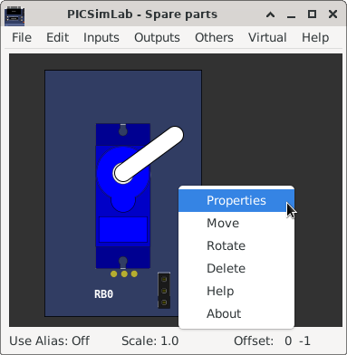

Chapter 10
Spare Parts
The PICSimLab has a window that allows the connection of spare parts to the microcontroller, it can be accessed through the menu “ Modules-> Spare parts ”.
The main window has the menu with the following functions:
-
File
- New configuration - Clear the spare parts window
- Save configuration - Saves the current settings of the spare parts into .pcf file
- Load configuration - Loads the settings from .pcf file
- Save pin alias - Saves the current pin alias to .ppa text file
- Load pin alias - Loads the pin alias from .ppa file
-
Edit
- Clear pin alias - Clear the pin alias
- Toggle pin alias - Enable/Disable pin alias use
- Edit pin alias - Open current pin alias .ppa file in text editor
- Reload pin alias - Reload the current .ppa pin alias file (need after edit .ppa file)
- Zoom in - Increase draw scale
- Zoom out - Decrease draw scale
-
Inputs
- BMP180 (Pressure I2C) - Adds a I2C pressure and temperature sensor
- BMP280 (Pressure I2C) - Adds a I2C pressure and temperature sensor
- DHT11 (Temp. Hum.) - Adds a humidity and temperature sensor
- DHT22 (Temp. Hum.) - Adds a humidity and temperature sensor
- DS1621 (Temperature I2C) - Adds a I2C temperature sensor
- DS18B20 (Temperature) - Adds a 1-Wire temperature sensor
- Encoder - Adds a rotary quadrature encoder with push button
- FM50 (Temperature) - Adds a analog temperature sensor
- Fixed Voltage - Adds a analog fixed voltage reference
- Gamepad - Adds a gamepad
- Gamepad (Analogic) - Adds a gamepad with one analogic output
- Keypad - Adds one matrix keypad
- LDR - Adds a light dependent resistor
- LM35 (Temperature) - Adds a analog temperature sensor
- MPU6050 - Adds a accelerometer and gyroscope (only raw values)
- Potentiometers - Adds 4 potentiometers
- Potentiometers (Rotary) - Adds 4 rotary potentiometers
- Push Buttons - Adds 8 push buttons
- Push Buttons (Analogic) - Adds 8 push buttons with analog output
- SHT3X - Adds a analog temperature and humidity sensor
- Switches - Adds eight switches
- Ultrasonic HC-SR04 - Adds a ultrasonic range sensor
-
Outputs
- 7 Segments Display - Adds four multiplexed (or single) 7 segments displays
- 7 Segments Display (w/dec) - Adds four multiplexed 7 segments displays with decoder
- Buzzer - Adds a active/passive buzzer
- DC Motor - Adds a DC motor with H-bridge and quadrature encoder
- LCD hd44780 - Adds a text display hd44780
- LCD hd44780 I2C - Adds a text display hd44780 connect to one PCF8574 I2C converter
- LCD ili9340 - Adds a color graphic display ili9340 with touchscreen
- LCD pcd8544 - Adds a monochrome graphic display pcd8544 (Nokia 5110)
- LCD pcf8833 - Adds a color graphic display pcf8833
- LCD ssd1306 - Adds a monochrome graphic display ssd1306
- LED Matrix - Adds a 8x8 LED matrix with MAX72xx controller
- LEDs - Adds 8 red LEDs
- RGB LED - Adds one RGB LED
- RGB LED WS2812B - Adds one or multiple addressable RGB LED
- Servo Motor - Adds a servo motor
- Step Motor - Adds a step motor
-
Others
- ETH w5500 - Adds a ethernet shield w5500
- IO 74xx573 - Adds a 74xx573 octal latch
- IO 74xx595 - Adds a 74xx595 SIPO 8 bit shift register
- IO MCP23S17 - Adds a MCP23S17 serial SPI IO expander
- IO PCF8574 - Adds a PCF8574 serial I2C IO expander
- IO UART - Adds a UART serial port
- Jumper Wires - Adds sixteen jumper wires
- MEM 24CXXX - Adds a 24CXXX serial I2C EEPROM memory
- RTC ds1307 - Adds a ds1307 real time clock
- RTC pfc8563 - Adds a pfc8563 real time clock
- SD Card - Adds a SD card shield
- Temperature System - Adds a temperature control system
-
Virtual
- D. Transfer Function - Adds a discrete transfer function mathematical model
- IO Virtual term - Adds a virtual serial terminal
- Signal Generator - Adds a virtual signal generator
- Text Box - Adds a static text box
- VCD Dump - Adds a digital value file dump recorder
- VCD Dump (Analogic) - Adds a analog value file dump recorder
- VCD Play - Adds a digital value file dump player
-
Help
- Contents - Open Help window
- About - Show message about author and version

After adding the part, with a right click of the mouse you can access the options menu of the part with the options:
- Properties - Opens the connection settings window
- Move - Unlocks the part to move
- Rotate - Change the orientation of part
- Delete - Remove part
- Help - Open Help window of part
- About - Show message about author and version of part

10.1 Pin Alias
10.2 Inputs
10.2.1 BMP180 (Pressure I2C)
10.2.2 BMP280 (Pressure I2C)
10.2.3 DHT11 (Temp. Hum.)
10.2.4 DHT22 (Temp. Hum.)
10.2.5 DS1621 (Temperature I2C)
10.2.6 DS18B20 (Temperature)
10.2.7 Encoder
10.2.8 FM50 (Temperature)
10.2.9 Fixed Voltage
10.2.10 Gamepad
10.2.11 Gamepad (Analogic)
10.2.12 Keypad
10.2.13 LDR
10.2.14 LM35 (Temperature)
10.2.15 MPU6050
10.2.16 Potentiometers
10.2.17 Potentiometers (Rotary)
10.2.18 Push Buttons
10.2.19 Push Buttons (Analogic)
10.2.20 SHT3X (Temp. Hum.)
10.2.21 Switches
10.2.22 Ultrasonic HC-SR04
10.3 Outputs
10.3.1 7 Segments Display
10.3.2 7 Segments Display (Decoder)
10.3.3 Buzzer
10.3.4 DC Motor
10.3.5 LCD hd44780
10.3.6 LCD ili9341
10.3.7 LCD pcf8833
10.3.8 LCD pcd8544
10.3.9 LCD ssd1306
10.3.10 LED Matrix
10.3.11 LEDs
10.3.12 RGB LED
10.3.13 RGB LED WS2812B
10.3.14 Servo Motor
10.3.15 Step Motor
10.4 Others
10.4.1 ETH w5500
10.4.2 IO 74xx573
10.4.3 IO 74xx595
10.4.4 IO MCP23S17
10.4.5 IO PCF8574
10.4.6 IO UART
10.4.7 Jumper Wires
10.4.8 MEM 24CXXX
10.4.9 RTC ds1307
10.4.10 RTC pfc8563
10.4.11 SD Card
10.4.12 Temperature System
10.5 Virtual
10.5.1 D. Transfer Function
10.5.2 IO Virtual Term
10.5.3 Signal Generator
10.5.4 Text Box
10.5.5 VCD Dump
10.5.6 VCD Dump (Analogic)
10.5.7 VCD Play
10.2 Inputs
10.2.1 BMP180 (Pressure I2C)
10.2.2 BMP280 (Pressure I2C)
10.2.3 DHT11 (Temp. Hum.)
10.2.4 DHT22 (Temp. Hum.)
10.2.5 DS1621 (Temperature I2C)
10.2.6 DS18B20 (Temperature)
10.2.7 Encoder
10.2.8 FM50 (Temperature)
10.2.9 Fixed Voltage
10.2.10 Gamepad
10.2.11 Gamepad (Analogic)
10.2.12 Keypad
10.2.13 LDR
10.2.14 LM35 (Temperature)
10.2.15 MPU6050
10.2.16 Potentiometers
10.2.17 Potentiometers (Rotary)
10.2.18 Push Buttons
10.2.19 Push Buttons (Analogic)
10.2.20 SHT3X (Temp. Hum.)
10.2.21 Switches
10.2.22 Ultrasonic HC-SR04
10.3 Outputs
10.3.1 7 Segments Display
10.3.2 7 Segments Display (Decoder)
10.3.3 Buzzer
10.3.4 DC Motor
10.3.5 LCD hd44780
10.3.6 LCD ili9341
10.3.7 LCD pcf8833
10.3.8 LCD pcd8544
10.3.9 LCD ssd1306
10.3.10 LED Matrix
10.3.11 LEDs
10.3.12 RGB LED
10.3.13 RGB LED WS2812B
10.3.14 Servo Motor
10.3.15 Step Motor
10.4 Others
10.4.1 ETH w5500
10.4.2 IO 74xx573
10.4.3 IO 74xx595
10.4.4 IO MCP23S17
10.4.5 IO PCF8574
10.4.6 IO UART
10.4.7 Jumper Wires
10.4.8 MEM 24CXXX
10.4.9 RTC ds1307
10.4.10 RTC pfc8563
10.4.11 SD Card
10.4.12 Temperature System
10.5 Virtual
10.5.1 D. Transfer Function
10.5.2 IO Virtual Term
10.5.3 Signal Generator
10.5.4 Text Box
10.5.5 VCD Dump
10.5.6 VCD Dump (Analogic)
10.5.7 VCD Play